데스크톱 기준 해상도 · 원본 2026-09-03 11:54 · 변경 없음
01세션 로비 (진입 화면)
첫 화면. 이름 입력, Create & Host, Join Host가 한 화면에 있고 첫 행동이 무엇인지 안내한다.
session-lobby
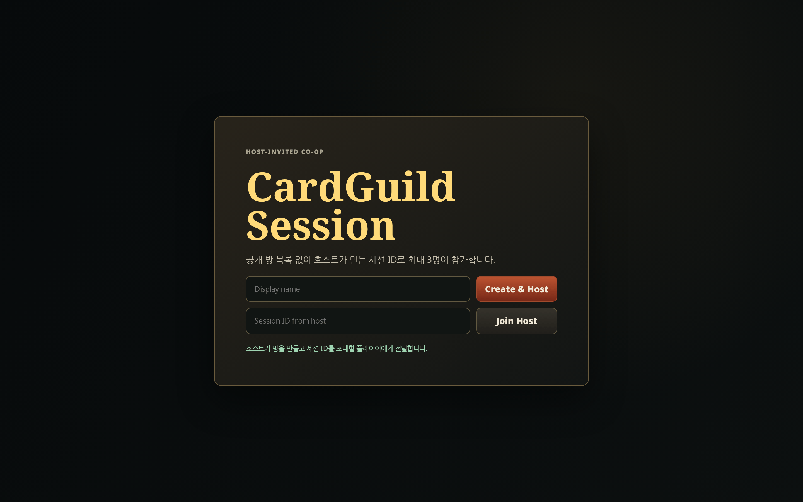
아직 변경 캡쳐가 없습니다.
02호스트 로비 · 파티 편성
Session ID 공유, seat 목록, 4명 중 1–3명 캐릭터 편성과 Begin Adventure 게이팅.
party-builder
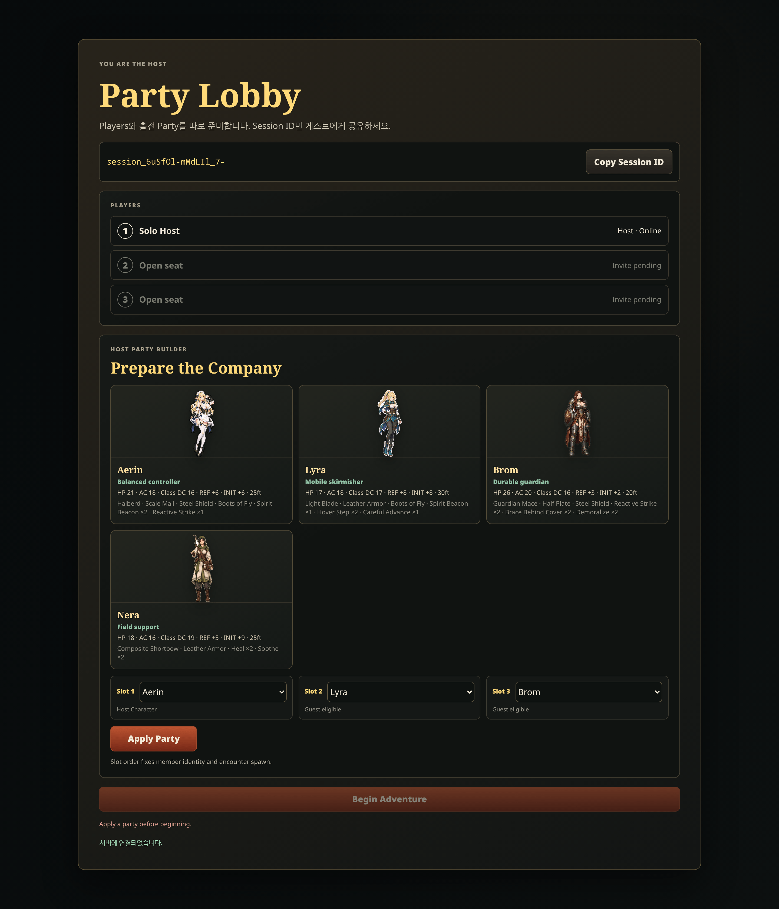
아직 변경 캡쳐가 없습니다.
03Adventure 진행 화면
8단계 진행 레일, 보상 표시, 소유 Collection, 다음 Encounter 브리핑.
adventure-brief
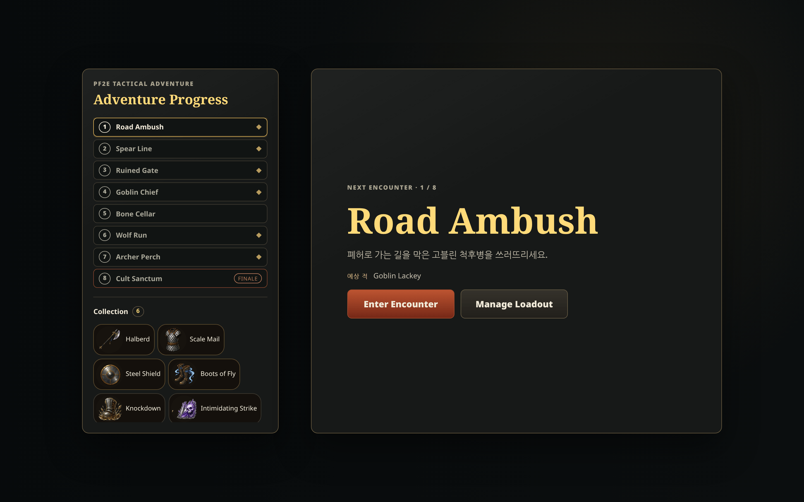
아직 변경 캡쳐가 없습니다.
04Loadout Builder (기본 상태)
장비 슬롯 · Collection · 덱 기여 카드가 한 화면에 있는 편성 화면.
loadout-builder
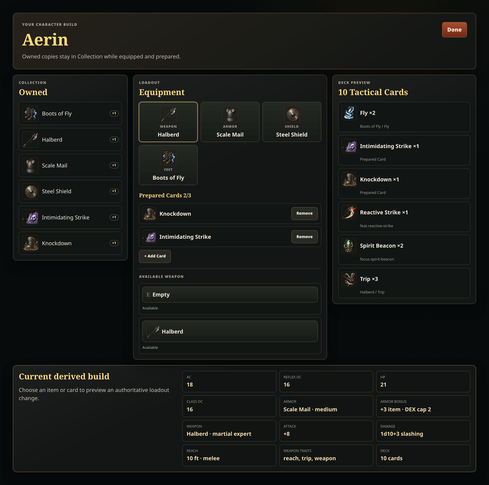
아직 변경 캡쳐가 없습니다.
05Loadout · 준비 카드 추가
Prepared Cards 슬롯에 넣을 카드 후보 목록. 덱 미리보기와 나란히 놓인다.
loadout-card-picker
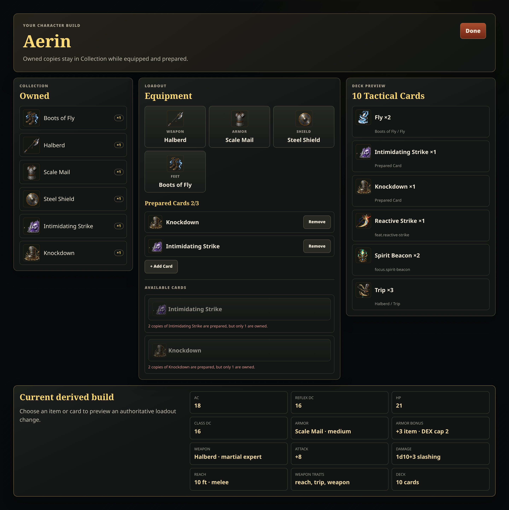
아직 변경 캡쳐가 없습니다.
06Loadout · 적용 전 변화 미리보기
무기를 비웠을 때 명중/피해가 어떻게 바뀌는지 Apply 전에 diff로 보여주는 상태.
loadout-preview-diff
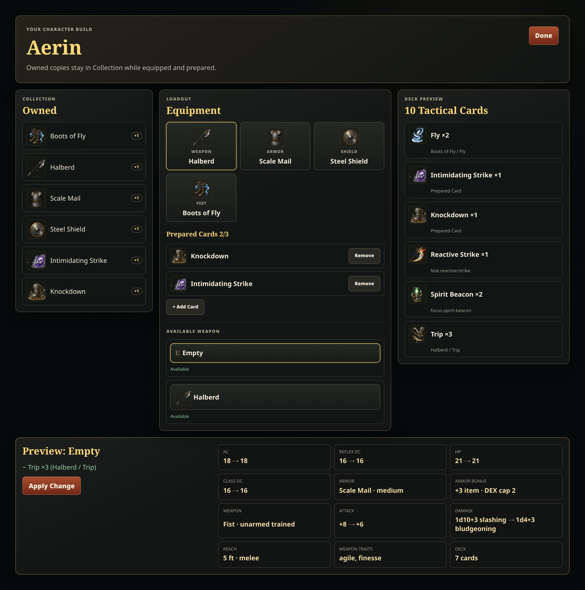
아직 변경 캡쳐가 없습니다.
07전투 화면 · 내 턴 시작
canvas 전체가 전장이고 HUD는 그 위 반투명 패널. 액션 pip, 이니셔티브, 핸드 독, 로그.
combat-turn
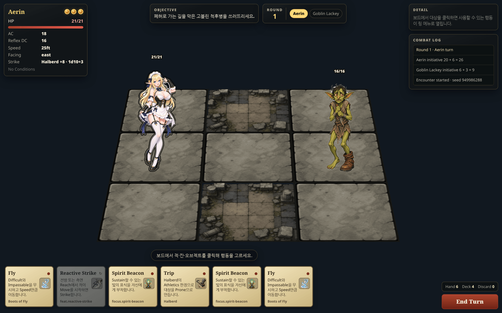
아직 변경 캡쳐가 없습니다.
08전투 화면 · 타겟 선택 후 액션 링
칸을 먼저 고르고 그 자리에서 행동을 고르는 target-first 라디얼 메뉴.
combat-action-ring
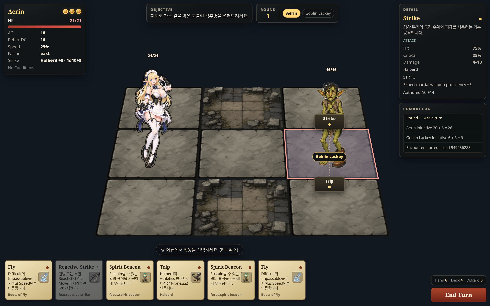
아직 변경 캡쳐가 없습니다.
09보상 선택 화면
Encounter 승리 후 파티가 공유하는 보상 하나를 고르는 화면.
reward-choice
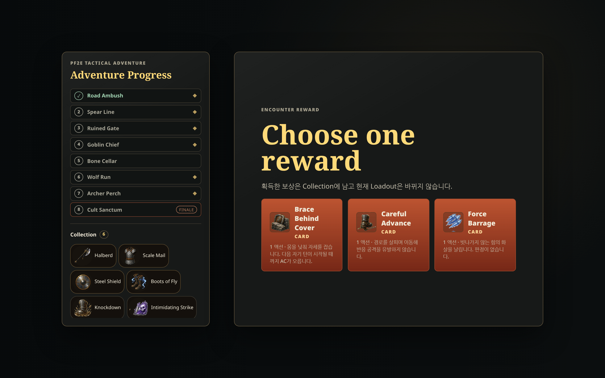
아직 변경 캡쳐가 없습니다.
10보상 수령 후 Adventure
미장착 보상 안내와 다음 단계로 진행하는 상태.
adventure-after-reward
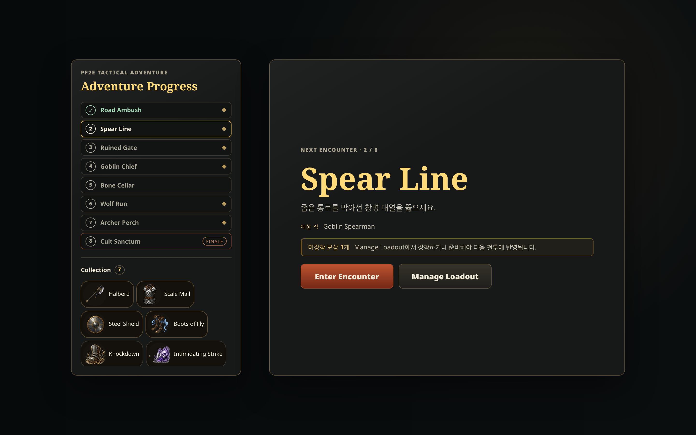
아직 변경 캡쳐가 없습니다.
11Adventure 실패 화면
전투가 끝난 뒤 진행 레일과 다음 행동이 어떻게 갱신되는지 보여주는 상태.
adventure-outcome
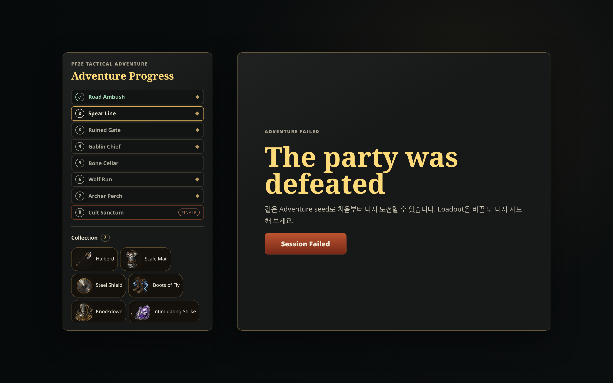
아직 변경 캡쳐가 없습니다.
12리액션 창
적의 이동으로 열린 반응 기회. 게임을 멈추고 쓸지 넘길지 묻는 유일한 인터럽트 UI.
reaction-window
리액션 카드를 준비한 채 인터럽트 패스를 돌렸지만 이 시드의 전투에서는 반응 기회가 열리지 않았습니다.
아직 변경 캡쳐가 없습니다.
13전투 결과 모달
Encounter가 끝났을 때 승패를 알리고 같은 시드로 다시 시작하게 하는 모달.
encounter-result
Adventure 흐름에서는 전투가 끝나는 즉시 Adventure 화면으로 넘어가 결과 모달이 뜨지 않습니다. 승패 안내는 보상 화면과 실패 화면이 대신합니다.
아직 변경 캡쳐가 없습니다.